Weekly pill box with a turning lid
Request
A round pill box with seven compartments, one per day, and a lid that turns over them: the lid has one opening, and turning it lines the opening up with the next day.
- About 90 mm across and 25 mm tall.
- The lid clicks into place over each of the seven compartments (a small bump and a notch at each step) and holds there, so it does not turn by itself in a bag.
- The lid turns but does not lift off: a lip under its rim, snapped on when I put it together.
- PLA on a Bambu Lab A1 with a 0.4 mm nozzle, no supports, walls at least 1.2 mm.
Show me the closed box as the assembly, and a full turn of the lid as its motion.
Gates at every iteration
| 5 | 10 | 15 | 20 | 25 | 30 | 35 | 40 | ||||||||||||||||||||||||||||||||||
| G1 compiles clean | |||||||||||||||||||||||||||||||||||||||||
| G2 closed meshes | |||||||||||||||||||||||||||||||||||||||||
| G3 assembly | |||||||||||||||||||||||||||||||||||||||||
| G4 motion | |||||||||||||||||||||||||||||||||||||||||
| G5 printable | |||||||||||||||||||||||||||||||||||||||||
| G7 spec held, all seen | |||||||||||||||||||||||||||||||||||||||||
| G8 honest close |
passedfailedpending: G8 is judged when the model closes. One column per iteration; each cell links to it.
Session
- Iteration 1USD 0.032 · 3 s · 161 output tokens
Designing your 7-day turning-lid pill box — first measuring the workspace and planning the click-stop mechanism.
run_shellexit=0, 0.017 s, stdout 3212 B, files +/~/- 0/0/0
- Iteration 2USD 0.557 · 277 s · 27,444 output tokens
scad_writemodel.scad: 220 lines
- Iteration 3USD 0.052 · 6 s · 184 output tokens
scad_compileok=False, 0 echo, 0 warnings, 0 failed asserts, 1 errorsscad_compileok=False, 0 echo, 0 warnings, 0 failed asserts, 1 errorsscad_compileok=False, 0 echo, 0 warnings, 0 failed asserts, 1 errors
- Iteration 4USD 0.007 · 9 s · 167 output tokens
run_shellexit=0, 0.01 s, stdout 1467 B, files +/~/- 0/0/0
- Iteration 5USD 0.016 · 10 s · 499 output tokens
scad_patchmodel.scad line 69: 220 lines
- Iteration 6USD 0.005 · 5 s · 46 output tokens
scad_compileok=True, 3 echo, 0 warnings, 0 failed asserts, 0 errors
- Iteration 7USD 0.007 · 6 s · 123 output tokens
scad_exportok=True, watertight=True, bodies=1, bounds=[[-43.0, -43.0, 0.0], [43.0, 43.0, 22.0]], spec FAILS, sheet renders/sheet-009.pngscad_exportok=True, watertight=True, bodies=1, bounds=[[-45.0, -45.0, 0.0], [45.0, 45.0, 15.2]], no spec, sheet renders/sheet-010.png
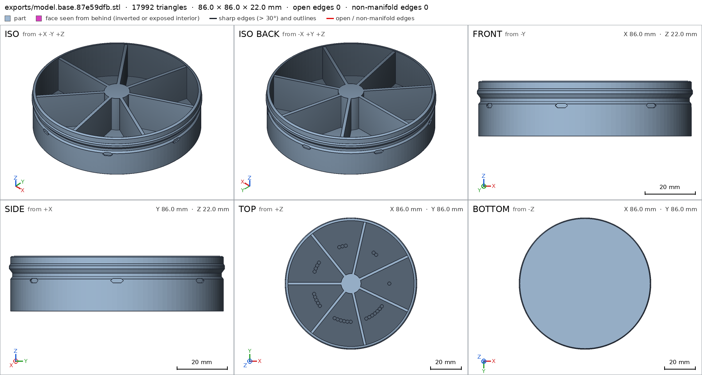
scad_export, call 9 scad_export, call 10 - Iteration 8USD 0.069 · 13 s · 950 output tokens
Both parts look right on their sheets; three spec details need fixing (pip ray collision, pip box fraction, duplicate detail name).
scad_patchmodel.scad line 159: 220 linesscad_patchmodel.scad line 166: 220 linesscad_patchmodel.scad line 189: 220 lines
- Iteration 9USD 0.038 · 9 s · 123 output tokens
scad_exportok=True, watertight=True, bodies=1, bounds=[[-43.0, -43.0, 0.0], [43.0, 43.0, 22.0]], spec ok- spec movedbase: the spec moved toward what the mesh already measured: detail floor from point [24.0, 0.0, -1.0] to point [20.0, 0.0, -1.0], the mesh measures 2.0 (the mesh is the same); detail day_pip_1 from 0.9 to 0.7, the mesh measures 0.7851 (the mesh is the same). That way those checks pass without the part changing. If the spec was badly posed against the request, that is fine: say so in the close, with the reason (once per part is enough). If not, fix the geometry.
scad_exportok=True, watertight=True, bodies=1, bounds=[[-45.0, -45.0, 0.0], [45.0, 45.0, 15.2]], spec ok
- Iteration 10USD 0.022 · 5 s · 193 output tokens
Base and lid specs are fully green. Now the printability reports and the assembly analysis, in one request.
printability_reportzones=7, undeclared=0, fits the bed=Trueprintability_reportzones=22, undeclared=21, fits the bed=Trueinterference_check2 instances, 1 overlaps, G3 1 problems, G4 8, G5 0, 15.96 s- G3base_main and lid_main overlap 0.03 mm³, 0.038 mm thick on average, in [[42.357, -1.754, 11.133], [42.5, 1.754, 11.439]]
- G4motion lid_turn: lid_main and base_main never overlap along it, so nothing bends: a flex is a feature that rides over what it presses on (a detent, a catch). Make it meet that, or leave the flex out
- G4motion lid_turn: between its rests 0° and 51.4286°, its flex rides over nothing, so nothing holds it at either: between two rests a detent rides over what it presses on, and drops into the next notch
- G4motion lid_turn: between its rests 51.4286° and 102.857°, its flex rides over nothing, so nothing holds it at either: between two rests a detent rides over what it presses on, and drops into the next notch
- G4motion lid_turn: between its rests 102.857° and 154.286°, its flex rides over nothing, so nothing holds it at either: between two rests a detent rides over what it presses on, and drops into the next notch
- G4motion lid_turn: between its rests 154.286° and 205.714°, its flex rides over nothing, so nothing holds it at either: between two rests a detent rides over what it presses on, and drops into the next notch
- and 3 more
- Iteration 11USD 0.114 · 45 s · 4,499 output tokens
run_pythonexit=0, 1.228 s, stdout 946 B, files +/~/- 0/0/0
- Iteration 12USD 0.023 · 17 s · 702 output tokens
scad_patchmodel.scad line 61: 226 linesscad_patcherror: old appears 0 times in model.scad; it must appear exactly once. Copy the exact text of the file, with its indentation.
- Iteration 13USD 0.011 · 6 s · 66 output tokens
run_shellexit=0, 0.007 s, stdout 949 B, files +/~/- 0/0/0
- Iteration 14USD 0.009 · 6 s · 54 output tokens
run_shellexit=0, 0.005 s, stdout 342 B, files +/~/- 0/0/0
- Iteration 15USD 0.012 · 6 s · 228 output tokens
scad_patchmodel.scad line 142: 229 lines
- Iteration 16USD 0.010 · 6 s · 162 output tokens
scad_patchmodel.scad line 172: 229 lines
- Iteration 17USD 0.010 · 10 s · 123 output tokens
scad_exportok=True, watertight=True, bodies=1, bounds=[[-43.0, -43.0, 0.0], [43.0, 43.0, 22.0]], spec ok, sheet renders/sheet-026.pngscad_exportok=True, watertight=True, bodies=1, bounds=[[-45.0, -45.0, 0.0], [45.0, 45.0, 15.2]], spec FAILS, sheet renders/sheet-027.png
scad_export, call 26 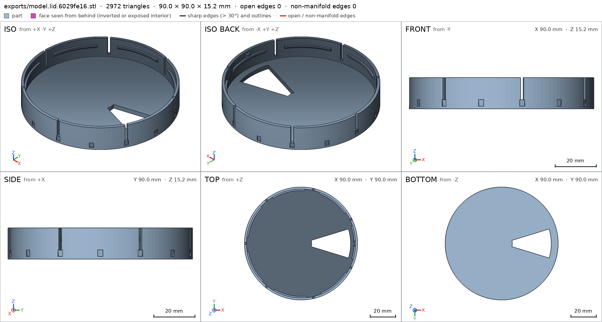
scad_export, call 27 - Iteration 18USD 0.042 · 7 s · 160 output tokens
scad_patchmodel.scad line 196: 229 lines
- Iteration 19USD 0.023 · 7 s · 60 output tokens
scad_exportok=True, watertight=True, bodies=1, bounds=[[-45.0, -45.0, 0.0], [45.0, 45.0, 15.2]], spec FAILS
- Iteration 20USD 0.017 · 5 s · 156 output tokens
scad_patchmodel.scad line 196: 229 lines
- Iteration 21USD 0.010 · 7 s · 60 output tokens
scad_exportok=True, watertight=True, bodies=1, bounds=[[-45.0, -45.0, 0.0], [45.0, 45.0, 15.2]], spec ok- spec movedlid: the spec moved toward what the mesh already measured: detail grip_flute from 0.6 to None, the mesh measures 0.7245 (the mesh is the same). That way those checks pass without the part changing. If the spec was badly posed against the request, that is fine: say so in the close, with the reason (once per part is enough). If not, fix the geometry.
- Iteration 22USD 0.017 · 6 s · 132 output tokens
Lid spec is green. Now the lid printability check and the full assembly re-check.
printability_reportzones=22, undeclared=21, fits the bed=Trueinterference_check2 instances, 0 overlaps, G3 0 problems, G4 0, G5 0, 42.1 s
- Iteration 23USD 0.026 · 7 s · 247 output tokens
Assembly checks pass; the remaining lid flute ceilings are tiny but still undeclared overhangs that will fail G5.
scad_patchmodel.scad line 144: 229 lines
- Iteration 24USD 0.011 · 5 s · 60 output tokens
scad_exportok=True, watertight=True, bodies=1, bounds=[[-45.0, -45.0, 0.0], [45.0, 45.0, 15.2]], spec ok, sheet renders/sheet-035.png
- Iteration 25USD 0.027 · 9 s · 105 output tokens
printability_reportzones=15, undeclared=14, fits the bed=Trueinterference_check2 instances, 0 overlaps, G3 0 problems, G4 0, G5 0, 41.6 s
- Iteration 26USD 0.032 · 6 s · 222 output tokens
scad_patchmodel.scad line 187: 230 lines
- Iteration 27USD 0.012 · 11 s · 60 output tokens
scad_exportok=True, watertight=True, bodies=1, bounds=[[-45.0, -45.0, 0.0], [45.0, 45.0, 15.2]], spec ok
- Iteration 28USD 0.020 · 10 s · 185 output tokens
Now the visual pass: final assembly view, detail close-ups, and the cut through the detent joint.
scad_exportok=True, watertight=True, bodies=2, bounds=[[-45.0, -45.0, 0.0], [45.0, 45.0, 25.0]], spec ok, sheet renders/sheet-040.pngrender_viewrenders/view-041.png: iso
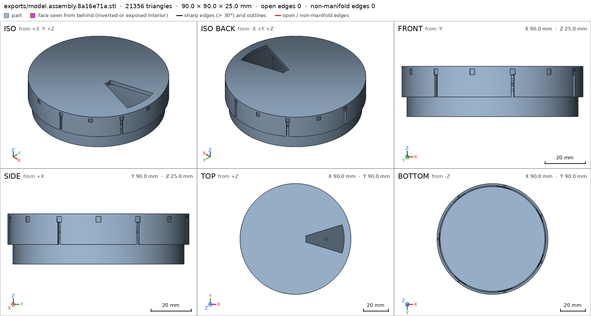
scad_export, call 40 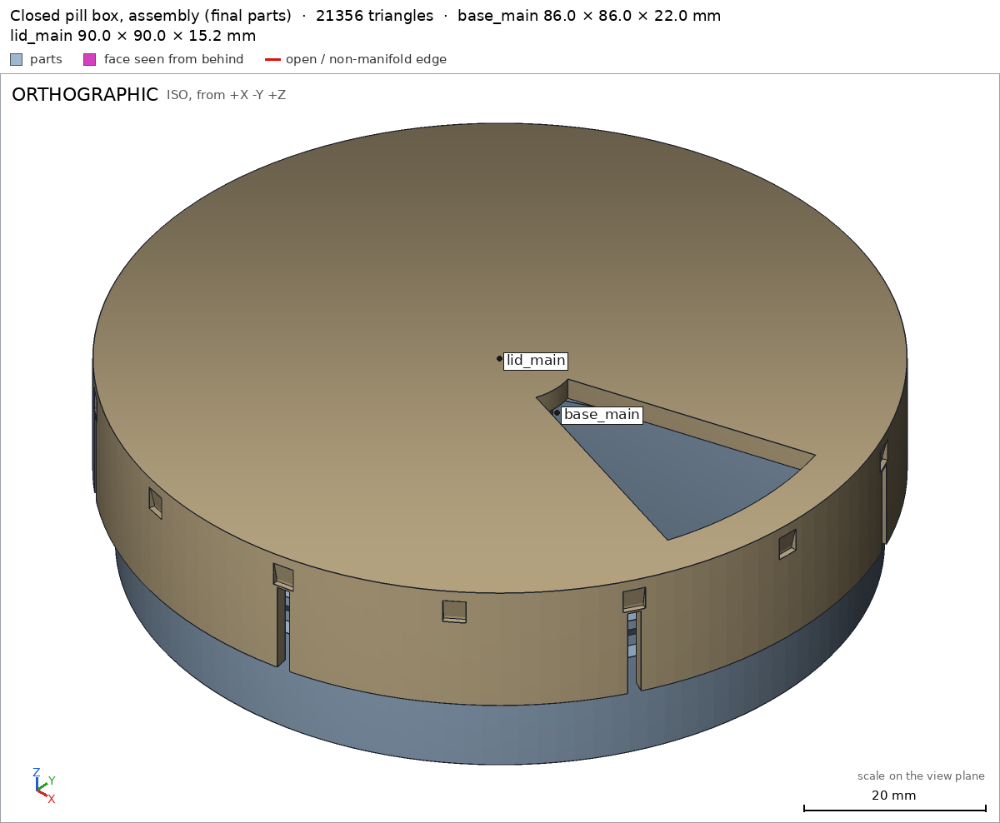
render_view, call 41 - Iteration 29USD 0.040 · 10 s · 414 output tokens
The closed box looks right. Now the detail close-ups — the view details in final coordinates plus the joint cross-section.
render_viewrenders/view-042.png: zoom, highlightrender_viewrenders/view-043.png: zoom, highlightrender_viewrenders/view-044.png: zoom, highlight
- Iteration 30USD 0.060 · 9 s · 316 output tokens
Flute, slit and opening all look as designed. Now the base notch close-up and the joint cross-section.
render_viewrenders/view-045.png: zoom, highlightrender_viewrenders/view-046.png: zoom, cut, cut 179.02 mm² 2 regions
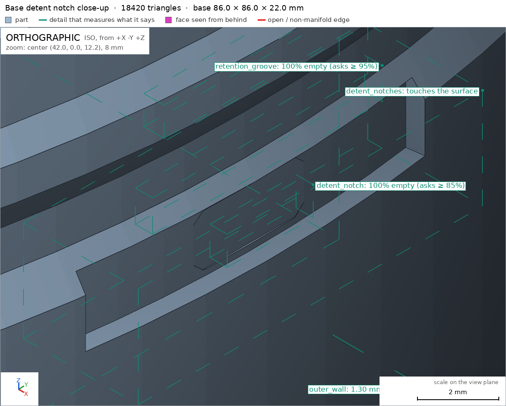
render_view, call 45 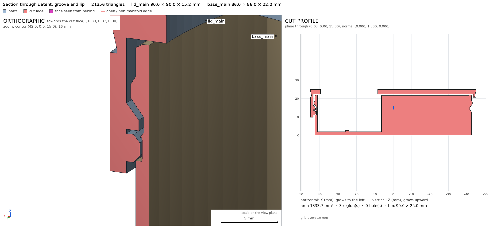
render_view, call 46 - Iteration 31USD 0.062 · 8 s · 47 output tokens
interference_check2 instances, 0 overlaps, G3 0 problems, G4 0, G5 0, 43.53 s
- Iteration 32USD 0.046 · 6 s · 246 output tokens
All green. Final visual confirmation on the freshly exported instance STLs.
render_viewrenders/view-048.png: zoom, cut, cut 179.02 mm² 2 regionsprintability_reportzones=15, undeclared=0, fits the bed=True
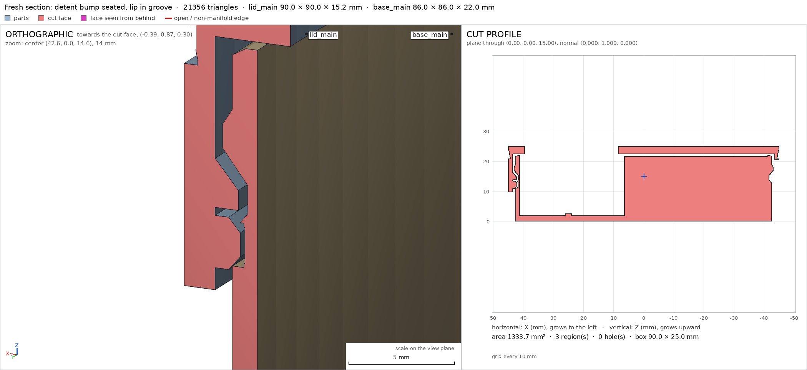
render_view, call 48 - Iteration 33USD 0.045 · 11 s · 509 output tokens
render_viewrenders/view-050.png: zoom, highlightrender_viewrenders/view-051.png: zoom, highlightrender_viewrenders/view-052.png: zoom, highlightrender_viewrenders/view-053.png: zoom, highlight
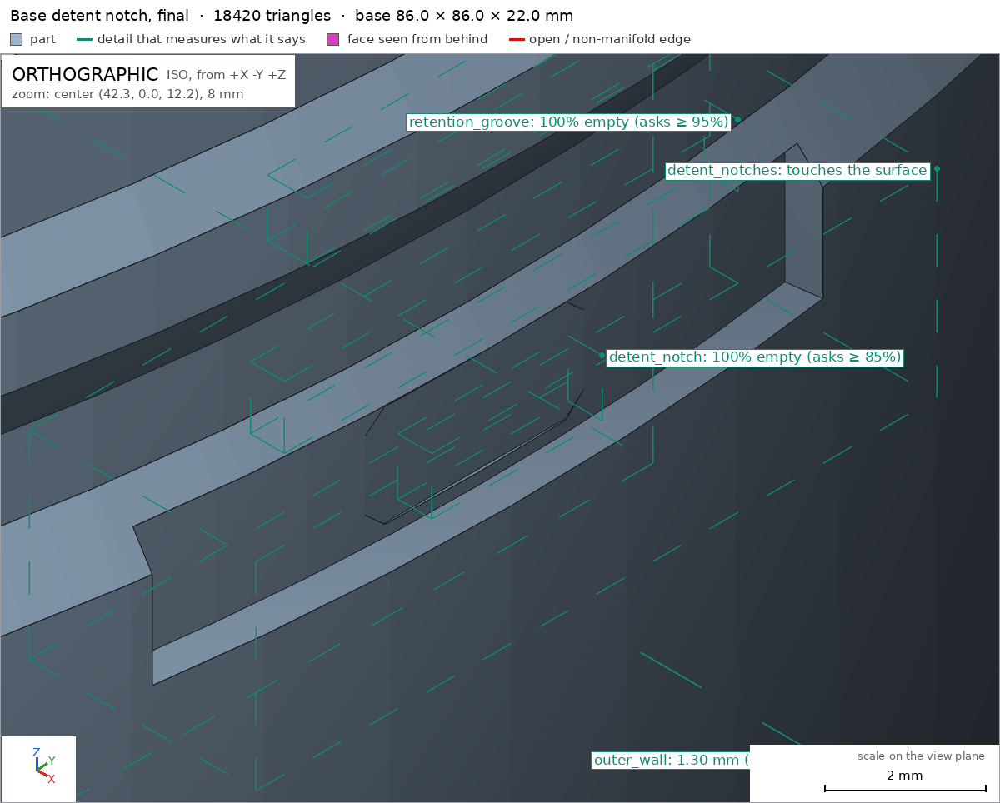
render_view, call 50 render_view, call 51 render_view, call 52 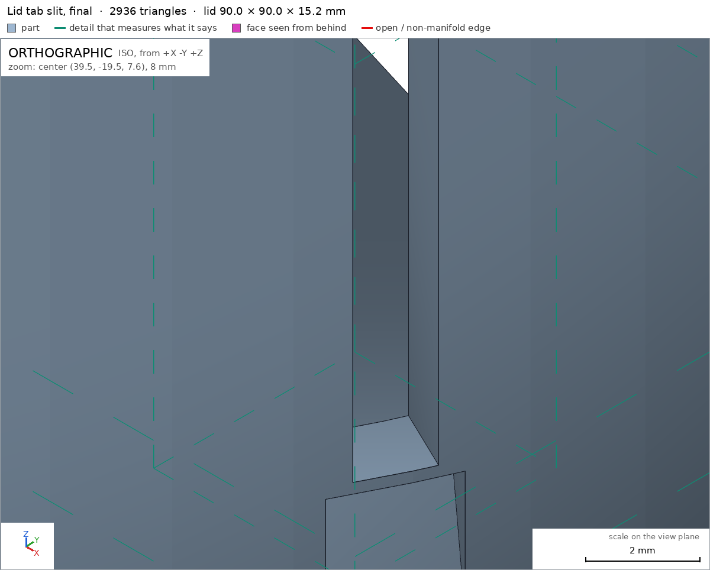
render_view, call 53 - Iteration 34USD 0.448 · 40 s · 3,655 output tokens
Assembly and part checks are green, but I spotted a structural weak point while reading the section print: the base's retention-groove root is only a 0.5 mm wall (groove floor r41.7, cavity wall r41.2), which violates the ≥1.2 mm wall requirement. I'll move the cavity wall inward to r40.4 and update the wall-thickness detail, then re-run everything.
scad_patcherror: After an image, confirm with numbers before changing the .scad: confirm it with numbers before fixing it: mesh_report, scad_export, printability_report, interfescad_patcherror: After an image, confirm with numbers before changing the .scad: confirm it with numbers before fixing it: mesh_report, scad_export, printability_report, interfe
- Iteration 35USD 0.255 · 8 s · 242 output tokens
run_pythonexit=0, 1.118 s, stdout 583 B, files +/~/- 0/0/0
- Iteration 36USD 0.024 · 11 s · 379 output tokens
Confirmed numerically: the groove-root wall measures 0.5 mm (and 0.65 mm at notch depth), below the 1.2 mm minimum. Thickening it by moving the cavity wall to r40.4.
scad_patchmodel.scad line 87: 230 linesscad_patchmodel.scad line 169: 231 lines
- Iteration 37USD 0.029 · 5 s · 60 output tokens
scad_exportok=True, watertight=True, bodies=1, bounds=[[-43.0, -43.0, 0.0], [43.0, 43.0, 22.0]], spec ok, sheet renders/sheet-059.png
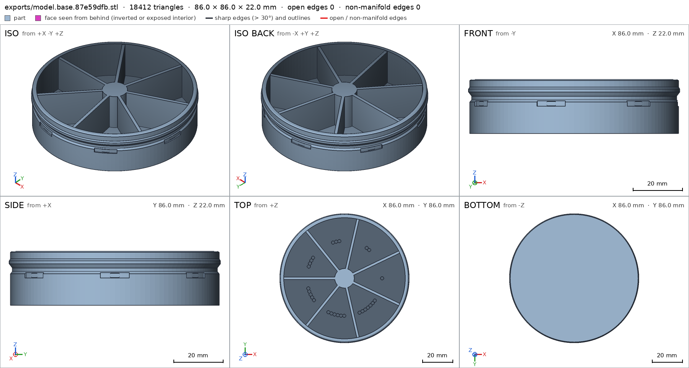
scad_export, call 59 - Iteration 38USD 0.241 · 10 s · 35 output tokensclose refused
Base is green with the thicker wall. Final re-verification across the board — assembly check, lid printability, and the assembly export — before I close.
- G7base: you did not look closely at the detail detent_notches in the final version (render_view of the STL exported with the default parameters, zoomed to its box: at least a quarter of the image's side)
- G7assembly: you did not see the instances of the final version together in one render_view (the STLs interference_check leaves)
- Iteration 39USD 0.037 · 9 s · 378 output tokens
Re-checking the final version and getting the two missing close views.
interference_check2 instances, 0 overlaps, G3 0 problems, G4 0, G5 0, 41.48 s
- Iteration 40USD 0.024 · 10 s · 221 output tokens
render_viewrenders/view-061.png: zoom, highlightrender_viewrenders/view-062.png: iso
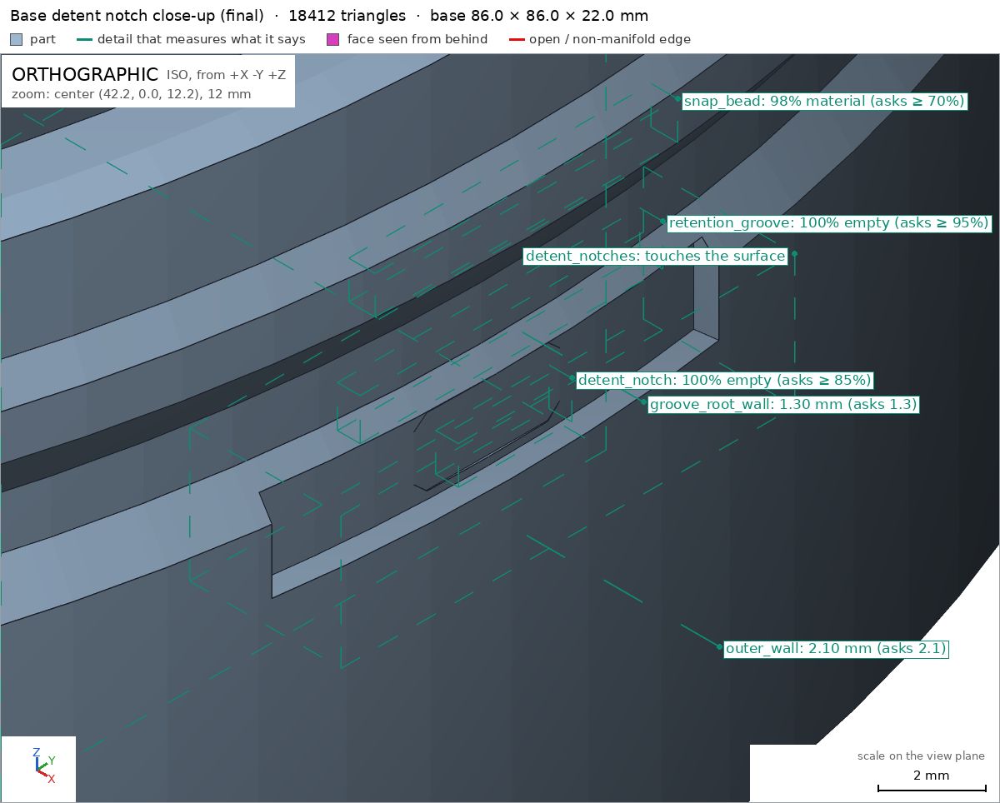
render_view, call 61 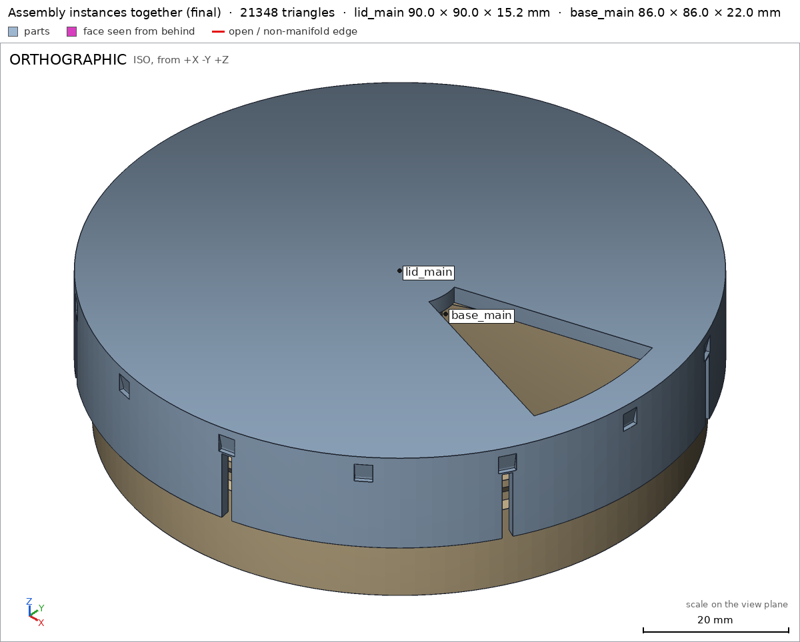
render_view, call 62 - Iteration 41USD 0.100 · 18 s · 1,698 output tokensaccepted
Done — weekly pill box with a turning, clicking, captive lid.
Two parts, printed separately and snapped together once:
- Base (86 mm Ø × 22 mm): seven wedge compartments around a centre hub, 20 mm deep behind a 2.0 mm floor, each floor carrying a raised pip count of 1–7 dots (feel them with a fingertip). Around its skirt: a recessed detent band with seven notches, the retention groove, and the 43 mm snap bead.
- Lid (90 mm Ø; 15.2 mm tall as printed, plate-down): one wedge opening that uncovers exactly one compartment at a time, grip flutes on the skirt, and seven flexible skirt tabs. One tab carries the detent bump that clicks into the base's notches; all seven carry inward lips that sit in the base's annular groove.
To assemble: centre the lid over the base and press straight down — the tabs flex over the bead (0.9 mm simulated snap) and the lips drop into the groove; from then on the lid turns freely but cannot lift off. In use it clicks and holds at each of the seven days, so it won't drift in a bag.
Verified (harness-measured on the final meshes):
- Overall closed box 90.0 × 90.0 × 25.0 mm assembly, sitting on the table face assembly/table; base 86 × 22 base, lid prints 90 × 15.2 plate-down lid — both fit the A1 bed and every >45° overhang is a declared bridging zone G5.
- Seven open compartments base/compartment with day pips base/day_pip_1; floor base/floor 2.0 mm, outer wall base/outer_wall 2.1 mm, groove-root wall base/groove_root_wall 1.3 mm, lid skirt lid/skirt_wall 1.6 mm, top plate lid/top_plate 2.6 mm — all ≥ 1.2 mm.
- Full-turn motion lid_turn: 0–360° swept collision-free except the declared detent flex (0.40 mm deep, free at both ends), with the lid resting at all seven day positions (every 51.43°) and riding over the band between them.
- The lid is captive — it comes off in no straight direction assembly — while the snap-on assembly step assembly_order passes with the declared 0.9 mm tab flex.
- The single dispensing opening lid/opening (wedge seen up close lid/opening_wedge), the detent recesses base/detent_notch (close view base/detent_notches), retention groove and lips base/retention_groove / lid/retention_lip over the bead base/snap_bead, flexible tabs lid/tab_slit and grip flutes lid/grip_flute are all measured/inspected as designed; both parts are single watertight bodies with the lid's one through-opening lid.
Not verified: actual click torque and feel, and how far PLA tabs really flex without cracking (the checks simulate rigid overlap up to the declared 0.5/0.9 mm, not material strength or fatigue); pill sizes fit (compartments hold roughly up to ~30 × 14 mm pills, untested with real pills); PLA food-contact suitability; fit on any individual printer (0.2–0.3 mm clearances are modelled, shrinkage may need a reprint at slightly scaled size).
Spec adjustments (badly posed against the request, geometry unchanged): base
floor— the measurement ray moved from x=24 to x=20 because at x=24 it pierced the day-1 floor pip and read floor+pip (2.6 mm) instead of the 2.0 mm floor; baseday_pip_1— required fill lowered 0.9 → 0.7 since a cylindrical pip can fill at most ~0.785 of its bounding box; lidgrip_flute— re-declared from a void box to a view detail, because the sloped grip groove cannot empty a rectangular box to 0.95 (it is instead visually verified up close). Separately, two real geometry fixes during development (not spec moves): the retention-groove root wall was thickened from 0.5 mm to 1.3 mm to meet the ≥1.2 mm wall requirement, and the detent notches were widened so the bump's click is genuinely engaged only at the seven rests.


Final verification
Source
model.scad
// Weekly pill box with a turning lid
// Two printed parts: base (7 compartments) and lid (one wedge opening).
// Lid clicks at 7 detent positions (360/7 deg), is retained by snap lips
// running in an annular groove on the base, and cannot lift off.
//
// Dimensions (mm):
// overall assembled: 90 diameter x 25 high
// base: max radius 43 (bead), top z=22, floor 2.0, outer wall 1.3,
// dividers 1.6, compartment depth 20
// lid (in use): top z=25, ceiling z=22.4, skirt OD 90 / ID 86.8,
// plate 2.6, skirt down to z=9.8
// Detent: one bump on a flexible skirt tab (tip r=42.1, z centre 12.2)
// engages 7 notches (floor r=41.9) in the base detent band r=42.5.
// Between notches the bump overlaps the band by 0.4 (flex).
// Retention: 7 lips (tip r=42.2) on slit skirt tabs sit in the base
// groove (r=41.7); to assemble they snap over the bead (r=43.0),
// an 0.8 radial interference taken by tab flex.
part = "assembly"; // [assembly, base, lid]
$fn = 128;
step = 360 / 7;
// --- base dimensions ---
base_top = 22;
bead_r = 43.0;
lid_r = 45.0;
// --- lid dimensions (use orientation) ---
lid_top = 25;
lid_ceiling = 22.4;
lid_skirt_bottom = 9.8;
detent_rests = [for (i = [0:7]) i * step];
cadverify_only = "";
module instance(name, part, unit = 1) {
echo(cadverify_instance = [name, part, unit]);
if (cadverify_only == "" || cadverify_only == name) children();
}
// ---------- helpers ----------
module sector_prism(r, a0, a1, z0, h) {
translate([0, 0, z0])
linear_extrude(height = h)
polygon(points = concat([[0, 0]],
[for (a = [a0:3:a1]) [r * cos(a), r * sin(a)]]));
}
module annular_sector(rin, rout, a0, a1, z0, h) {
translate([0, 0, z0])
linear_extrude(height = h)
polygon(points = concat(
[for (a = [a0:2:a1]) [rout * cos(a), rout * sin(a)]],
[for (a = [a1:-2:a0]) [rin * cos(a), rin * sin(a)]]));
}
// ---------- base ----------
module notch_cut() {
// Hexagonal (in vertical/tangential plane) recess, extruded radially.
// Floor at x=41.85, opens through the r=42.5 detent band. The hex cut
// sweeps ~+/-2.2 deg of arc at the notch floor, which would hide the
// rising detent bump near each rest; the wider hex recess below is the
// notch (cut deeper into the band surface, +/-8 deg), and the hex cut
// alone forms the deep centre the bump tip drops into.
for (i = [0:6])
rotate([0, 0, i * step]) {
annular_sector(41.9, 42.8, -8, 8, 11.1, 2.2);
translate([41.85, 0, 12.2])
rotate([0, 90, 0])
linear_extrude(height = 2.6)
polygon(points = [
[0.9, -1.6], [0.9, 1.6], [0, 2.6],
[-0.9, 1.6], [-0.9, -1.6], [0, -2.6]]);
}
}
module base_part() {
difference() {
union() {
// Floor + outer wall with groove / bead / detent-band profile.
rotate_extrude()
polygon(points = [
[0, 0], [42.5, 0], [42.5, 12.8], [41.7, 13.8],
[41.7, 15.2], [43.0, 16.9], [43.0, 18.1],
[42.5, 18.9], [42.5, 21.6], [41.8, 22.0],
[40.4, 22.0], [40.4, 2.0], [0, 2.0]]);
// Central hub.
translate([0, 0, 2]) cylinder(r = 6.5, h = 19.6);
// Seven radial dividers (at compartment boundaries).
for (i = [0:6])
rotate([0, 0, (i + 0.5) * step])
translate([0, -0.8, 2]) cube([41.2, 1.6, 19.6]);
// Day pips on each compartment floor: 1..7 raised dots.
for (i = [0:6])
for (j = [0:i])
rotate([0, 0, i * step + (j - i / 2) * 5])
translate([25, 0, 2]) cylinder(r = 1.1, h = 0.6);
}
notch_cut();
}
}
// ---------- lid, in use orientation (z = assembly z) ----------
module lid_use() {
difference() {
union() {
// Top plate.
translate([0, 0, lid_ceiling]) cylinder(r = lid_r, h = lid_top - lid_ceiling);
// Skirt tube.
translate([0, 0, lid_skirt_bottom])
difference() {
cylinder(r = lid_r, h = lid_ceiling - lid_skirt_bottom);
translate([0, 0, -0.1]) cylinder(r = 43.4, h = lid_ceiling - lid_skirt_bottom + 0.2);
}
// Retention lips on the 7 tabs: tip band + 39 deg release slope.
for (i = [0:6])
rotate([0, 0, i * step])
intersection() {
difference() {
translate([0, 0, 13.9]) cylinder(r = 43.5, h = 2.5);
union() {
translate([0, 0, 13.8]) cylinder(r = 42.2, h = 1.1);
translate([0, 0, 14.9]) cylinder(r1 = 42.2, r2 = 43.45, h = 1.5);
}
}
sector_prism(46, -19, 19, 13.8, 2.7);
}
// Detent bump on tab 0: hull gives tangential + vertical ramps.
hull() {
translate([42.35, 0, 12.2]) cube([0.5, 2.2, 1.2], center = true);
translate([43.3, 0, 12.2]) cube([1.2, 4.4, 2.6], center = true);
}
}
// The single dispensing opening (wedge) through the plate.
annular_sector(8.5, 39.5, -17, 17, lid_ceiling - 0.2, lid_top - lid_ceiling + 0.4);
// Slits between skirt tabs (tabs flex for snap + detent).
for (i = [0:6])
rotate([0, 0, (i + 0.5) * step])
translate([42.7, -0.8, 9.7]) cube([3.0, 1.6, 10.9]);
// Shallow grip flutes on the upper (anchor) ring of the skirt.
for (i = [0:13])
rotate([0, 0, i * 360 / 14])
hull() {
translate([44.9, -1.3, 23.4]) cube([0.7, 2.6, 0.3]);
translate([44.3, -1.3, 20.85]) cube([1.3, 2.6, 0.3]);
}
}
}
// Lid in print orientation: plate on the bed, skirt up.
module lid_printed() {
rotate([180, 0, 0]) translate([0, 0, -lid_top]) lid_use();
}
// ---------- verified specifications ----------
if (part == "base") {
echo(cadverify_spec = [
["bounds", [[-43, -43, 0], [43, 43, 22]]],
["bodies", 1],
["through_holes", 0],
["support_faces", [["print_bed", "-z", 5000]]],
["overhangs_allowed", [
["detent notch ceilings, 0.65 deep recesses bridging from the band surface", [[-43.5, -43.5, 10.9], [43.5, 43.5, 13.5]]]
]],
["copies", 1],
["details", [
["floor", "thickness", [20, 0, -1], [0, 0, 1], 2.0],
["outer_wall", "thickness", [48, 0, 10], [-1, 0, 0], 2.1],
["groove_root_wall", "thickness", [46, 0, 14.6], [-1, 0, 0], 1.3],
["compartment", "void", [[15, -8, 5], [37, 8, 20]], 0.88],
["hub", "material", [[-5, -5, 5], [5, 5, 20]], 0.9],
["detent_notch", "void", [[42.0, -1.5, 11.7], [42.6, 1.5, 12.7]], 0.85],
["retention_groove", "void", [[41.9, -4, 13.9], [42.5, 4, 15.0]], 0.95],
["snap_bead", "material", [[42.2, -4, 17.0], [42.9, 4, 18.0]], 0.7],
["day_pip_1", "material", [[23.9, -1.1, 2.0], [26.1, 1.1, 2.6]], 0.7],
["detent_notches", "view", [[40, -6, 10.5], [44, 6, 14]]]
]]
]);
} else if (part == "lid") {
echo(cadverify_spec = [
["bounds", [[-45, -45, 0], [45, 45, 15.2]]],
["bodies", 1],
["through_holes", 1],
["support_faces", [["print_bed", "-z", 5000]]],
["overhangs_allowed", [
["detent bump underside ramp in print orientation, 1.3 wide bridging from the tab", [[41.5, -3.5, 11.3], [44.5, 3.5, 14.3]]],
["retention lip release slopes in print orientation, 1.2 wide bridging from the skirt", [[-44.5, -44.5, 8.4], [44.5, 44.5, 11.3]]],
["grip flute top faces, 0.7 deep grooves with flat floors on the skirt ring", [[-45, -45, 3.9], [45, 45, 4.5]]]
]],
["copies", 1],
["details", [
["top_plate", "thickness", [0, 0, -1], [0, 0, 1], 2.6],
["skirt_wall", "thickness", [48, 0, 5], [-1, 0, 0], 1.6],
["opening", "void", [[18, -5, 0], [36, 5, 2.6]], 0.95],
["retention_lip", "material", [[42.4, -1.5, 10.2], [43.2, 1.5, 11.0]], 0.9],
["detent_bump", "material", [[42.3, -1.0, 12.2], [43.2, 1.0, 13.4]], 0.5],
["grip_flute", "view", [[43.5, -2.0, 1.5], [45.2, 2.0, 4.6]]],
["tab_slit", "view", [[37, -22, 4], [42, -17, 15.2]]],
["opening_wedge", "view", [[8, -20, 0], [40, 20, 2.6]]]
]]
]);
} else if (part == "assembly") {
echo(cadverify_spec = [
["bounds", [[-45, -45, 0], [45, 45, 25]]],
["support_faces", [["table", "-z", 5000]]],
["motions", [
["lid_turn", ["lid_main"], "rotate", [0, 0, 0], [0, 0, 1], [0, 360],
["flex", [["lid_main", "base_main", 0.5, "detent bump rides over the r42.5 band between notches, tab flexes outward"]]],
["rests", detent_rests]]
]],
["assembly_order", [
[["base_main"], [0, 0, 0]],
[["lid_main"], [0, 0, -1],
["flex", [["lid_main", "base_main", 0.9, "retention lips and detent bump snap over the r43 bead, skirt tabs flex outward"]]]]
]],
["held", ["lid_main"]]
]);
}
// ---------- output ----------
if (part == "base") {
base_part();
} else if (part == "lid") {
lid_printed();
} else if (part == "assembly") {
instance("base_main", "base") base_part();
instance("lid_main", "lid") translate([0, 0, lid_top]) rotate([180, 0, 0]) lid_printed();
} else {
assert(false, "unknown part");
}